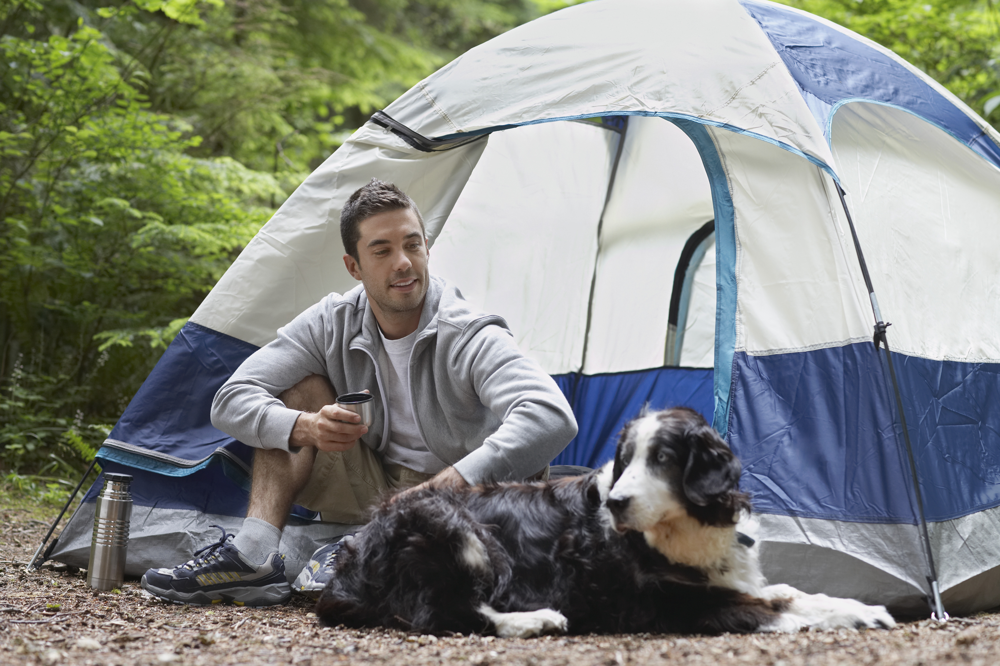
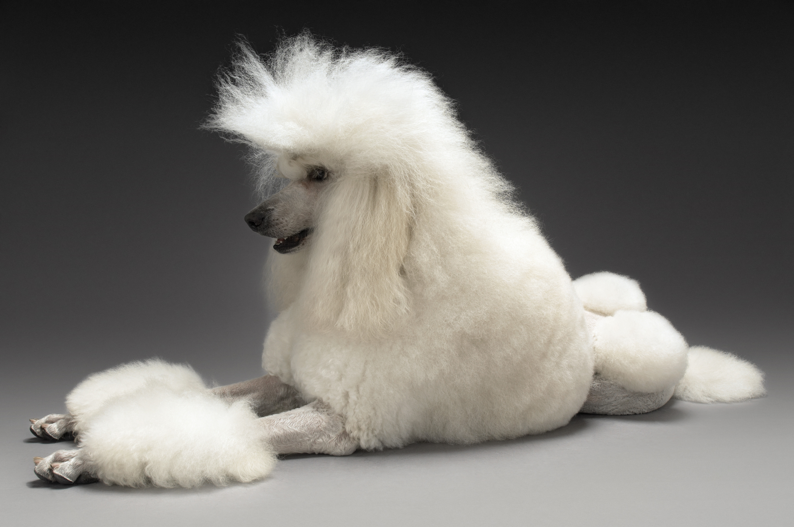

Give Your Furry Baby Best Care Possible
Caping with your furry baby

Your furry baby is a member of the family, and he loves the great outdoors. So it makes sense
to take him along on your next camping trip! Any canine would jump at the chance to roam around
the great outdoors and stick his head out the car window on the drive to the campsite. (Plus,
you'll save money on boarding fees!) Camping with dogs, no matter how big or small the breed,
only takes a bit of extra prep and a few additional supplies, like food, dishes, and safety gear.
Don't worry; it hardly takes up any extra room. Before you head out, make sure your campsite allows
four-legged visitors, and prepare for the unexpected with extra food, medication, and emergency supplies.
Know Your Dog’s Camp Personality
Before you embark on a wilderness adventure, it’s important to assess your dog’s readiness. Is she a
lounge hound? A relaxed car camping trip might be the best choice. Is she a daring doggy athlete with
plenty of outdoor experience? Maybe it’s time to take that weeklong backpacking trip!
Be honest about your dog’s personality, and plan your trip accordingly. If your dog is bold and
adventurous in new surroundings, you will plan a very different trip than if you have a cautious dog
who needs some encouragement to try new activities. If you’re uncertain how your dog will adapt to camp
life, try taking a few day trips and picnics before planning a campout.
Research Dog-Friendly Campsites
There’s nothing worse than hitting the road with your four-legged friend only to arrive at your
destination and find a No Dogs Allowed sign. Whatever kind of camping trip you have in mind, be
sure to call ahead or research online to find dog-friendly campgrounds and trails. Check on leash
laws, too; some campsites only welcome restrained pets, whereas others are okay with your dog being
off-leash as long as they respond promptly to voice command (and you watch where they poop so you can
pick it up, of course). You may find that many campgrounds will have rules that change by season and
are more dog-friendly in the off-season than during peak summer months.
Refresh Camp-Friendly Training
Whether you’re headed for a back-country trek or a campground off the highway, your dog will need
a reliable recall command to keep them out of danger (and away from other campers who might not be
so into dogs). You should also brush up on the “leave it” command in case you encounter snakes,
bears, or other wildlife on the trail. Consider doing some outdoor training sessions before going
on your big camping trip.
Prepare for Emergencies
Before you leave on your camping trip, make a laminated card with your dog’s identifying
information, vaccination record, and health history, plus all of your contact info. You
should also make sure your dog’s microchip info and tags are up-to-date.
Nature can be unpredictable, and so can dogs, so it’s important to be prepared for anything.
Practice Good Campsite Etiquette
Once you arrive at your campsite, it’s important to be courteous to your fellow campers.
Use a leash or that rock-solid recall command to keep your dog out of strangers’ campsites,
and be sure to pick up and properly dispose of your dog’s waste.
For optimum safety and enjoyment, your dog should stick near you at all times, and should
never be left unsupervised at the campsite, in a vehicle, or on the trail. Remember: weather
conditions can change, wildlife can appear, and a host of other unpredictable situations may arise.
Of course, sometimes you may need to confine your pup for safety or convenience (say, while you’re
roasting hot dogs over the fire under the determined eye of a certain four-legged friend).
Have Fun!
Camping with dogs is a great way to get away from it all and bond with your best buddy. Far
away from glowing screens and a million distractions, you’ll take in the sights, sounds, and
smells of nature with a true connoisseur of all three.
Nothing beats snuggling up with a dog in a cozy tent, the scent of campfire still lingering in
the air. With a little preparation, you and your dog will be all set to heed the call of
the wild and have a blast!
Visiting vet with your furry baby

No one loves your furry baby as much as you do. Part of that love is making sure they get the
best veterinary care possible. You can help your vet deliver it when you prepare for routine
checkups, know when there’s an emergency, and follow up after your pet gets care.
Visits to the vet can be stressful for your furry baby. Bring along some of their favorite toys and
a blanket. Ask if it’s OK for them to eat before the visit -- some health tests require animals
to fast beforehand. (Water is OK -- you don’t want them to be dehydrated.) If food is OK,
you could bring their favorite treats.
If your furry baby doesn’t get along well with other animals, let the office staff know.
It might be easier for it to wait in your car with you until the vet is ready for the appointment.
Call ahead of time to see if the clinic is running on schedule so you don’t end up waiting too long.
Choose the right vet
This is obvious, but important. Of course, you want your vet to be up on the latest in the field
of veterinary medicine, but equally important is someone who is willing to take time with a skittish,
anxious or even just highly exuberant dog. The entire clinic staff should be sensitive to any needs
your dog may have. Ask the veterinary practice directly about their willingness to work with you if
your dog is struggling to cope. Shop around—if a vet isn’t interested in accommodating you,
find one who is.
Communicate with your vet
Be clear with your veterinarian about what scares your dog and what steps are possible to make your
dog have a better experience at the office. Share any cues your dog knows that can be helpful, such
as “sit,” “down” and “stay,” as well as the husbandry-related cues mentioned in point 5.
In this odd time in which we are living, many veterinarians are not allowing owners in the clinic,
which means it’s harder to show our vet what our dogs can do or what makes them uneasy.
Videos are a great way to share information about cues and problematic issues, so consider asking
your veterinarian if you can send in videos to explain your dog to them. If they agree, be
thoughtful of your veterinarian and veterinary technician’s time and keep the videos brief.
If the staff are not willing to look at these videos, consider that perhaps you haven’t yet
found the right veterinarian for you and your dog.
Make vet days “fun days”
Follow every veterinarian visit with a favorite activity, such as a swim, a visit to the park or
a walk in the woods. Knowing that a good time will follow the vet visit can help your dog feel
better about being there.
Train your dog to relax
Train your dog to relax in response to your touch by practicing dog massage at home. Then, give
him a soothing massage during a vet visit, especially while in the waiting area. To increase
its effect, practice it in a familiar setting rather than trying it for the first time at the
vet’s office.
Train your dog in husbandry tricks
To alleviate the stress your dog may feel at being physically manipulated at the vet, train
him to do things that translate to the exam process—for example, to step up onto a small
platform when asked, a “trick” that works well for the vet’s scale. Others include “belly up”
for abdominal exams; “shake” to present a paw for blood draws; and “down/stay” for vaccinations,
exams and anything else that requires him to remain still. Besides making visits to the vet less
stressful, training your dog to perform these behaviors on cue also shortens the visit, which in
turn makes it less objectionable for everyone (and may even leave more time for you to discuss
your concerns with the vet).
Use counter conditioning
Use counter conditioning to help prepare your dog for potentially scary things. This means
teaching your dog to associate something that will happen during a vet visit with feeling good.
Examples include teaching her that when someone examines her ears or her mouth, she will get a
treat. With enough practice doing this in the right way (she’s not frightened and does receive a
treat), you can make these aspects of an exam no big deal for your dog.
Make your first visit to the vet an opportunity to get acquainted
Go to sniff around the waiting room, meet the vet and the staff, and have a pleasant experience
free of pesky exams or shots. If your dog is comfortable getting on the scale, a weigh-in is fine,
but if not, skip it. Have everyone your dog meets be a source of the highest-quality treats you
can provide—hamburger, chicken, real steak. If your dog is crazy about balls, chew toys or squeaky
toys, have the vet and the vet tech each give your dog one while in the exam room. You want your
dog to think that this is a place where the most wonderful things happen. I call these appointments
“meet and greets” and I advise them for dogs of any age. Simply call the vet and say that you’d
like to make (and pay for) an appointment during which your dog is introduced to the facility and
the staff. If they’re unwilling, consider looking for another vet.
Have everyone at the clinic give your dog lots of top-quality treats at every visit
This is “Love Your Vet 101” advice, but it’s popular for a reason: It works. If a dog learns
that he gets the most delicious treats in the world while at the vet, then he is more likely
to be cooperative about going there. To be successful, two important aspects of this strategy
must be observed: First, use extra-special treats, not the ordinary kind; dry biscuits are just
not going to have the same emotional impact. (Which would you find more motivating, a chocolate
chip cookie or a cracker?) Second, unless it’s inappropriate for your dog’s health condition,
be generous—multiple treats make more of an impression.
Plan your clinic entrances and exits
Plan your clinic entrances and exits to make them as free of stress as possible. Many dogs’
objections to the vet are really objections to the lobby or waiting area. If this applies to
your dog, there are ways to get around the situation. Ask if there’s a back entrance that you
and your dog can use; also, try using your car as an alternate “waiting room” and ask if someone
will let you know when it’s time for the exam; at some clinics, a staff member will come out to
your car or give you a call on your cell phone to let you know it’s your turn.
Finally, maintain a calm frame of mind yourself
Your emotions are contagious— the more cheerful and relaxed you are, the more you can help your
dog. So, use whatever works for you— chocolate, relaxing music, deep-breathing exercises—but try
not to stress!
Regular vet visits are important to our dogs’ health and well-being, but getting our furry
“patients” there is only half the battle. Having them be happy and cooperative is the real
victory—which is why I advise making this a fundamental part of every dog’s training and education.
Training Your Furry Baby: What to Do

There are some things to keep in mind when you are training your furry baby. The first
one is that dog training is never "finished." It is a process that you will continue
throughout your dog's life. Training needs reinforcement all the time in order for your
dog to continue doing what he's learned. Below are a few other basic tips for dog training.
Set Aside Time for Daily Training Sessions
It's good to do training in a controlled environment as much as possible. That means
that the best dog training isn't done while you're in the middle of a walk outside but
rather at home or in the backyard or a field where you will be safe and not bothered.
When you are trying to teach your dog something new, daily training sessions are necessary.
When your dog is older and you are reinforcing previous lessons, once a week is fine.
Keep Training Sessions Short
Don't plan on marathon training sessions where you spend hours working on a trick until
your dog has thoroughly learned it. Dogs learn much better when you break training times
up into short, 10 or 20-minute sessions and follow them with rest or play time. Always
end each session when your dog has been successful, even if it's only a small step in
the direction of what you're trying to train him to do.
Try Training When Your Dog Is Hungry
If your dog is hungry when you do a training session, he will be more interested in
whatever treats you're using for positive reinforcement. If he's just had a big meal,
the treats might not be as motivating.
Train After a Play Session
Before you start a training session, have a good, tiring play session with your dog.
If you have just gotten home from work, your dog has been in a crate for a few hours,
and you get him out and try to train him right away, odds are that you'll both be frustrated.
Get some of your dog's energy out with a vigorous play session, which will also improve
the bond between the two of you, and then start a short training session after that.
Consider Clicker Training
Clicker training is a powerful way to teach your dog what he should and shouldn't be
doing. It works by associating the clicker noise with right behavior in the dog's mind.
You can click much more quickly than you can give a treat, so it helps you "tell" the
dog at exactly the right second that what he's done is right. You can follow it with a
treat, and eventually the click itself will be enough positive reinforcement for your dog.
Always Focus on Positive Reinforcement
Negative reinforcement doesn't train dogs to follow commands nearly as well as positive
reinforcement does. Rather than correcting your dog for doing something you don't want
him to do, focus on showing him what you do want and praising him when he does it.
That usually means breaking a task or trick up into tiny increments and teaching them to
your dog slowly. As he is successful at each one and receives your positive reaction,
he'll want to continue to do well and learn more. If he's not getting a certain thing,
back up to the previous step and work at it until he's got it down thoroughly.
Grooming Your Fuury Baby: Professional Tips

Every furry baby requires some grooming, whether it’s as simple as nail trimming or as
extensive as a poodle’s pompadour with bows. But not everyone has access to or
can afford a monthly trip to the local dog “salon,” so we’ve put together some
dog grooming tips and tricks from professionals around the country.
These professional dog grooming tips should make your life easier, make your dog
look like a million bucks, and help keep your budget intact.
Brush Their Coats to Keep Their Fur and Skin Healthy and Clean
Brushing your dog will remove dirt, debris, dead hair and unpleasant odors from
the coat and the skin. It distributes the natural oils, making your dog’s coat shiny
and healthy. Proper brushing will eliminate matting and tangling, which will make
your next grooming appointment go more smoothly (and your Groomer very happy!).
Your longer-haired pooch needs more than just a brushing to keep his coat matt
free. Follow-up the brushing by using a metal comb to get down to the skin and
locate any matts that may be starting to form. Proceed gently with a metal comb,
especially if your pup’s skin is particularly sensitive.
Brush Their Teeth at least Once a Day
We have guests who only get their teeth brushed when they visit our salon, but
that’s not nearly enough. Ideally, you should brush your dog’s teeth daily,
but even 2 – 3 times a week makes a big difference. Use only toothpaste made
especially for dogs. Dogs can’t spit, and human toothpaste contains unsafe
ingredients which could make him sick if he were to swallow it. I use a child’s
toothbrush so it’s softer on my dog’s gums, but a lot of people have good luck
with the rubber finger brush. If you still find it difficult to brush your dog’s
teeth, dental sprays and specially designed chew treats can be helpful.
Trim Their Nails
Just like humans, some dog’s nails grow more quickly than others. Some may
require trimming every 2 weeks, and some can wait a full 6 weeks. Nail
trimming is everyone’s least favorite task. Since you are diligent about your
6 – 8 week grooming visits, you can most-likely get by with just “tipping”
the end of the nail to avoiding the doggie drama that often accompanies at-home
nail trims. If the tap, tap, tap of nails on your hardwood floors is driving you
crazy, you can always stop by and we will be happy to trim your dog’s nails
for you while you wait.
Clean Their Ears to Prevent Infection
All dogs need their ears cleaned at least monthly. But if you have a dog with
longer or heavier ears that flop over the ear canal, more frequent ear cleaning
is a must. A buildup of bacteria or wax in the ears can lead to infection.
If you don’t have doggie ear cleaner at home, there are plenty of ear cleaner
“recipes” online… with ingredients generally on-hand like vinegar, hydrogen
peroxide, etc.. Wet a cotton ball with your cleansing solution and clean the
outside area first, gradually working your way towards the inner area. It is
not recommended to use cotton swabs deep inside the ear canal, but you can use
them to gently clean inside the ear folds on the outer ear flaps. If your dog
is a frequent swimmer, it is advisable to clean and dry their ears each time
after swimming.
Wash Their Face to Eliminate Bacteria
Some breeds like bulldogs and shar peis have wrinkles or skin folds on their
face. Moisture can accumulate within those folds to set-up the perfect
environment for yucky bacteria. Bacteria can then lead to dermatitis or
worse, infection. It is important to keep these folds clean and dry. A warm
washcloth or even baby wipes will do the trick. If redness, bumps or odor
becomes a problem, see your vet. A more stringent cleaning schedule or
solution may be in-order.
Clean Around Their Eyes to Remove Eye Goop
Some dogs are prone to accumulating excessive eye “goop”. Yeah, I know…
kind-of gross. Excessing tearing or discharge collects in the corners of the
eyes and can get crusty. My last dog was terribly prone to eye goop and I
would carefully use a flea comb to remove it. I recommend loosening the goop
with a warm wash cloth first, and then using the flea comb to remove it.
Light colored dogs may have the accompanying red stain that comes with excess
tearing to which you can use a dog Tear Stain removal from your local pet
supply store. Keep an eye on this area. Excess discharge can be a symptom of
a more serious conjunctivitis. If you see signs of irritation, redness, or a
funky smell, we recommend having your vet take a look at it.
Give Them a Bath to Keep Them Smelling Great
If your pup looks great, but she doesn’t smell all that great, there are a
number of doggie towelettes and dry shampoos on the market. Some even contain
moisturizers and conditioners to further enhance the health and appearance of
your dog’s coat. I use doggie towelettes whenever my dog comes in from outside.
It removes outside allergens, dirt, and pee and poop residue. By using these
daily, Rex never has an odor. You may find these to be very helpful
in-between Grooming appointments.